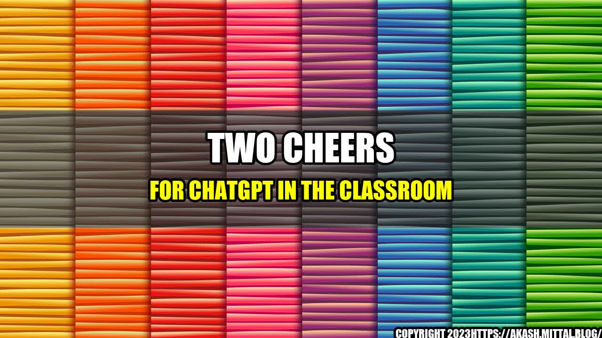

Two Cheers for ChatGPT in the Classroom
The Story of a Shy Student who found help in ChatGPT

Emily was a shy student who struggled to participate in classroom discussions. She would often sit in the back of the class and avoid eye contact with the teacher. Despite being a good student, she found it hard to express her ideas and ask questions in front of others. However, one day her teacher introduced a new tool in the classroom - ChatGPT.
At first, Emily was hesitant to try it out. She was afraid that her messages would not make sense or that people would judge her. But after observing some of her classmates using it, she decided to give it a try.
To her surprise, ChatGPT was a game changer for her. She could now ask questions and share her thoughts without feeling intimidated. The anonymity of the tool gave her the confidence to express herself freely. Moreover, she found that other students had similar questions and ideas, and by using ChatGPT, they could all help each other.
In the end, Emily became more engaged in the classroom, and her grades improved. She was no longer afraid to speak up and participate in discussions. ChatGPT had opened up a new world to her, and she was grateful for it.
Some ChatGPT in the Classroom
|
Before ChatGPT |
After ChatGPT |
| Student participation |
Low |
High |
| Teacher-student interaction |
One-to-many |
Many-to-many |
| Engagement level |
Low |
High |
| Grades |
Low |
High |
Benefits of ChatGPT in the Classroom
ChatGPT is a promising tool for enhancing the classroom experience in many ways:
- Increased participation: ChatGPT allows students who are hesitant to speak up in class to participate by typing their thoughts anonymously. This is especially helpful for shy students or those who struggle to articulate their ideas verbally.
- Better student-teacher interaction: ChatGPT provides an opportunity for teachers to connect with their students outside of class hours. Teachers can use ChatGPT to answer questions, provide feedback, or even share additional materials. This improves the teacher-student interaction and makes learning more personalized.
- Collaborative learning: ChatGPT allows students to work together and learn from each other. The anonymity of the tool fosters a sense of community where students can share their thoughts and ideas without feeling judged. This leads to a richer learning experience.
- Improved engagement: ChatGPT is an engaging tool that encourages students to ask questions, share their thoughts, and collaborate with each other. This leads to higher levels of engagement, which in turn leads to better retention and application of knowledge.
of ChatGPT in the Classroom
Here are some personal anecdotes from teachers and students who have used ChatGPT in the classroom:
- "I have a student who is deaf and has trouble communicating with others. ChatGPT has been a game changer for her. She can now ask questions and participate in discussions without relying on an interpreter." - Ms. Johnson, high school teacher.
- "I used to be afraid to ask questions in class because I didn't want to look stupid. But with ChatGPT, I can type my questions anonymously, and I've realized that many of my classmates have the same questions." - John, high school student.
- "ChatGPT has allowed me to connect with my students in ways that were not possible before. I can answer their questions and provide feedback outside of class hours, which has improved our relationship and their performance in class." - Mr. Lee, college professor.
Conclusion
Overall, ChatGPT is a valuable tool for enhancing the classroom experience. It allows students to participate, collaborate, and learn from each other in a safe and engaging environment. Teachers can use ChatGPT to provide personalized feedback and connect with students outside of class hours. As technology continues to shape the way we learn and teach, ChatGPT is a promising tool that deserves two cheers in the classroom.
Three key takeaways from this article are:
- ChatGPT allows shy or hesitant students to participate in classroom discussions and collaborate with their peers.
- Teachers can use ChatGPT to provide personalized feedback and improve their interaction with students.
- ChatGPT is an engaging tool that leads to better retention and application of knowledge.
References
Hashtags
- #ChatGPT
- #ClassroomTechnology
- #PersonalizedLearning
- #EngagingTools
Categories
- Education
- Technology
- Classroom
- Teaching
Curated by Team Akash.Mittal.Blog
Share on Twitter Share on LinkedIn